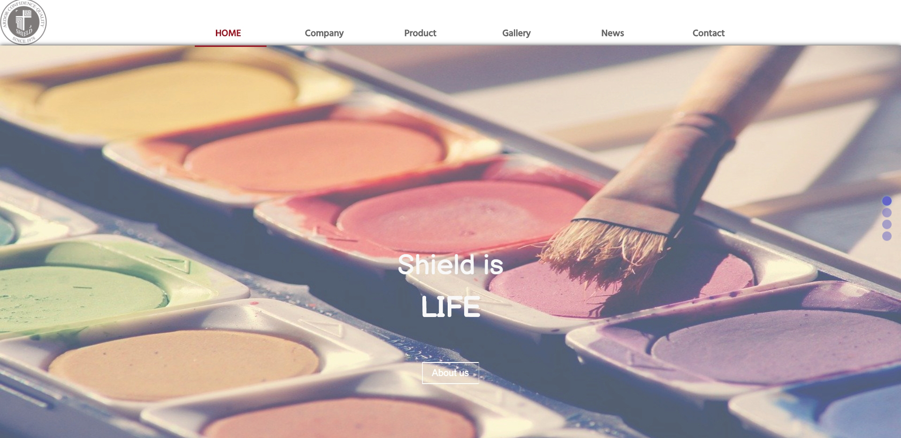
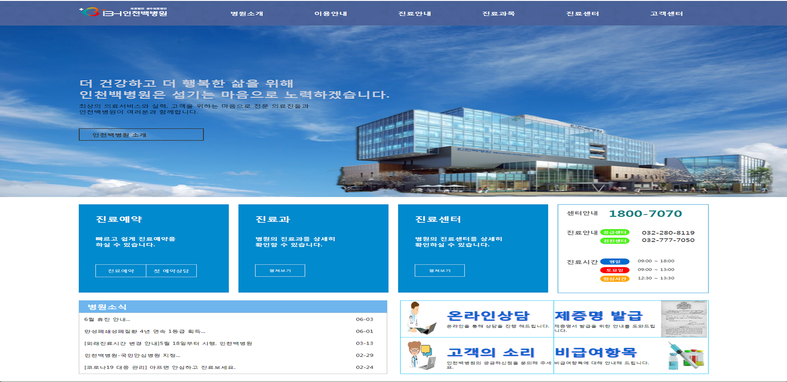
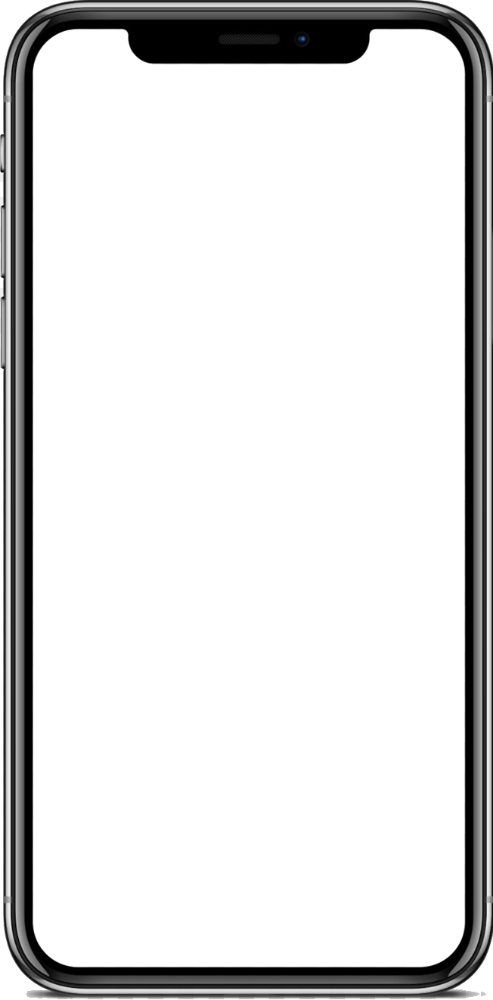

#FFF : 하얀 도화지의 느낌을 주기위하여 사용했습니다.
Kim's
Kim Jeong Hoon
포트폴리오에 방문해주셔서 감사합니다.
About
이름 : 김정훈
나이 : 1992년생 (만 27세)
경력 : 2011~ 2019년도 10월 해군부사관 근무
자격증 : GTQ 1급, 웹디자인기능사
교육 : 2020. 02 ~ 2020. 07 라인컴퓨터아트학원 멀티미디어 콘텐츠제작 과정 수료.
work
click->
숨김
- 
- 
-

Skill
HTML
CSS
JQUERY
JAVASCRIPT
PHOTOSHOP
ILLUSTRATOR
contact me!
숨김
010-9205-6857
power12203@naver.com
power12203@naver.com
Thank you
for watching
my portpolio!


Shield Color
#9C1421 : 눈에 피로감을 크게 주지않으면서도 강조할수있는 색상을 생각하며 포인트 컬러로 선택했습니다.
컬러가 다양한 사이트를 제작하기 위하여 물감회사를 리디자인하였습니다.
서브페이지에서 스크롤 할시 글자가 하이라이트 되는효과와 컬러를 선택시 캔버스에 그려지는 효과를 주었습니다.
서브페이지는 Company 와 Product 에서 OilColor와 AcrylicColor까지 작동합니다.
인천 백병원
#4A6299 : 인천 백병원의 메인 색에서 톤업하여 좀더 부드러운 느낌을 주기위해 사용하였습니다.
#018ACD : 주로 많이 찾을것같은 메뉴들의 색상을 눈에 띄도록 선택하였습니다.
기존 인천백병원 사이트를 모방하여 반응형으로 재구성 하였습니다.
서브페이지로는
병원소개 항목까지 작동합니다.
JD Sports
#000/#1F1F1F : 메인 컬러를 검정으로 하였으며 하단 메뉴는 검정보다 톤업하여 #1F1F1F 색상을 사용하였습니다.
#F00/#FF0 : 포인트 컬러로 #FF0 과 #F00 색상을 사용하였으며 검정색 대비 눈에 띄기 쉬운색으로 선정하였습니다.
JD를 선택한이유는 스포티한 느낌의 홈페이지를 작업하고 싶어서 선택했습니다. 주로 FLEX를 사용하여 구조를 잡았으며, 서브페이지로는 NEW, MEN까지 작업하였습니다.
HoonsTel
#FFF : 펜션의 청결의 의미하는 색상으로 흰색을 선택하였습니다.
#0383b0 : 바다를 연상케 하는 푸른 계열의 색상을 포인트 컬러로 선택하였습니다.
훈스텔은 실제로 있는 펜션이 아닌 언스플래쉬 사이트에서 이미지만 사용하여 저만의 펜션소개 페이지를 만들어 보았습니다. 아무래도 휴식처를 선택하는 고객의 입장에서 뭔가 이목을 끌만한 소재를 생각하다보니 다양한 동작들을 많이 넣어 시각적으로 지루하지 않도록 코딩했습니다.
서브페이지로는 LANDSCAPE ROOMS FACILTIES SERVICE 메뉴까지 작업했습니다.